Murilo Ribeiro
Delegado de Polícia Civil — MG
Palestra de aberturaII Seminário de
Integração e ação
contra o crime organizado
Marque na agenda: o seminário acontece em 4 de dezembro de 2026, a partir das 8h.
04/12/2026 · Auditório – Edifício Sede do MPSC
Facções brasileiras e a Governança Criminal
Palestrante: Murilo Ribeiro (Delegado de Polícia Civil do Estado de Minas Gerais)
Os pilares das investigações integradas de facções criminosas
Painelistas: Leandro Antunes Meirelles Machado (Promotor de Justiça do MPPR) e Ricardo Jorge Pereira Filho (Delegado de Polícia Civil da PCPR)
Cooperação Internacional: a perspectiva de profissionais policiais dos EUA
Painelistas: Representantes da Embaixada dos Estados Unidos
O papel das operações especiais no cenário de enfrentamento ao crime organizado
Painelista: Maurílio Nunes da Conceição (Subsecretário-adjunto da SSP do RJ)
Mediadores: Anderson Sthanke (Comandante do BOPE SC) e Daniel Dias (Coordenador da CORE-SC)
Imprensa e crime organizado: como equilibrar interesse público e o sigilo das investigações
Painelistas: Bianca Andrighetti Coelho (Promotora de Justiça MPSC); Rafael Saldanha (jornalista CNN); Nader Khalil (jornalista NDTV) e Anderson Silva (jornalista NSC)
Contextualização da atuação do crime organizado na região de fronteira
Palestrante: Thalys Franklyn de Souza (Promotor de Justiça MPMS com atuação no GAECO do MPMS)
Tecnologia, inteligência artificial e prova digital no enfrentamento das organizações criminosas
Painelistas: Rafael Velasquez (CEO da Techbiz); Fabrício Lamas Borges da Silva (Promotor de Justiça MPGO com atuação no CYBERGAECO do MPGO) e Maristela Schneider (Promotora de Justiça MPRS)
Membros do Ministério Público, forças de segurança, imprensa e especialistas em tecnologia de todo o país.
Delegado de Polícia Civil — MG
Palestra de aberturaPromotor de Justiça — MPPR
Painel IDelegado de Polícia Civil — PCPR
Painel IRepresentantes de profissionais policiais
Painel IISubsecretário-adjunto da SSP — RJ
Painel IIIComandante do BOPE SC
Mediador · Painel IIICoordenador da CORE-SC
Mediador · Painel IIIPromotora de Justiça — MPSC
Painel IVJornalista — CNN
Painel IVJornalista — NDTV
Painel IVJornalista — NSC
Painel IVPromotor de Justiça — MPMS (GAECO)
PalestraCEO da Techbiz
Painel VPromotor de Justiça — MPGO (CYBERGAECO)
Painel VPromotora de Justiça — MPRS
Painel VRua Bocaiúva, n. 1792 — Centro
Florianópolis/SC
Sexta-feira, 4 de dezembro de 2026 · credenciamento a partir das 8h.
Abrir no Google MapsAs inscrições são feitas pelo portal EAD do MPSC. Clique no botão ou aponte a câmera do celular para o QR code.
ead.mpsc.mp.br/course/view.php?id=1338
Aponte a câmera do celular
Fale com a Gerência de Capacitação pelo WhatsApp. A mensagem já vai pronta — é só enviar.
(48) 3229-9394
Realização
